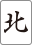

前説明
役を説明するうえで必要な用語説明
順子(シュンツ)


このように同じ種類で数字が3つ繋がっているものを順子と呼びます。この例では、順子が3つあります。
刻子(コーツ)

このように同じ種類で数字が3つ全て一致しているものを刻子と呼びます。この例では、刻子が3つあります。
雀頭(ジャントウ)or対子(トイツ)


同じ2枚の牌で作られるもので、対子（トイツ）とも呼ばれる。↑これです。
三元牌(サンゲンパイ)


三元牌です。
※現時点で判定できる役一覧
1飜役
タンヤオ

2～8の牌のみで揃えると成立する役です。
平和(ピンフ)


順子が4つ、雀頭が役牌（三元牌 ）以外でそろえられている。
※本来、両面待ちで成立します。
一盃口(イーペーコー)
同じ種類、同じ番号の順子が２つあると成立する役です。
※七対子、対々和とは重複しません。
役牌（三元牌）／白發中
白・發・中を3つ以上で和了で成立します。
2飜役
七対子(チートイツ)
同じ牌が2つある形(対子)が7組あると成立する役です。
対々和(トイトイ)
同じ牌3つの刻子を4つと、同じ牌2つで揃えると成立する役です。
三色同刻(サンショクドウコウ)

萬子、筒子、索子 の同じ数字で刻子3つで成立します。
三色同順(サンショクドウジュン)

萬子、筒子、索子 の同じ数字で順子3つで成立します。
一気通貫(イッキツウカン)

1つの種類で、123、456、789の順子（連番で揃えた面子）を揃えると成立する役です。
3/4/5飜役
混一色(ホンイーソー)

萬子、筒子、索子 のどれか１種類と、字牌で揃えると成立する役です。
清一色(チンイーソー)
萬子、筒子、索子 の１種類で揃えると成立する役です。
役満
大三元(ダイサンゲン)
白・發・中すべてを刻子で揃えると成立します。
国士無双(コクシムソウ)


1・9・字牌の頭と、1・9・字牌を全種類揃えると成立する役です。